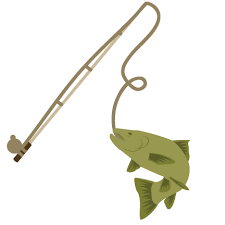
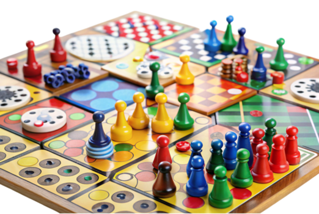
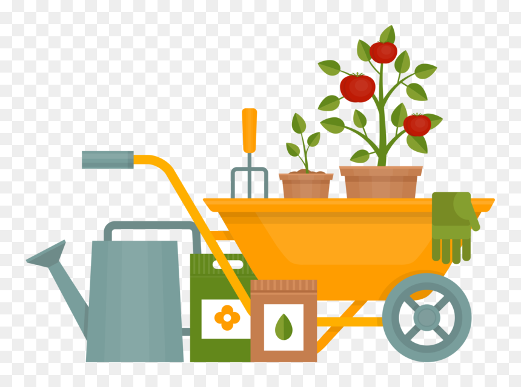

Video Games
Favorite Hobby · Endless Adventures
I love diving into different worlds through video games. Whether it’s exploring open worlds,
defeating bosses, or relaxing with casual games, this hobby has always been my favorite way
to unwind and escape reality for a while.

Fishing
Outdoors · Peace & Patience
Fishing helps me slow down and enjoy quiet moments. It’s part relaxing escape, part challenge,
and always a great reason to spend time outside in nature.

My Dog
Best Friend · Daily Joy
My dog brings so much happiness to my life. Whether we’re playing,
going for walks, or just hanging out, he always manages to make every day better.

Board Games
Strategy · Fun with Friends
I love the mix of strategy, creativity, and social interaction that board games bring.
Each game night feels like a chance to laugh, compete, and connect with people.

Hiking
Adventure · Nature
Hiking gives me a sense of freedom and accomplishment. I enjoy exploring new trails,
taking in the scenery, and disconnecting from technology for a while.

Gardening
Growth · Peaceful Hobby
Gardening lets me slow down and take care of something living. Watching plants grow over time
is rewarding, peaceful, and a great way to spend time outdoors.